What one green light at the end of a dock can teach us about reading between the lines, hearing an unreliable narrator, and collecting the sparkling vocabulary of a doomed golden age.
Based on the Gemini Notebook visual presentation of F. Scott Fitzgerald's classic
At the end of Daisy Buchanan's dock burns a small green light, and it has burned there for a hundred years. When F. Scott Fitzgerald published The Great Gatsby in 1925, the book barely registered with the public, and the author went to his grave in 1940 still convinced that his best work had been forgotten. Today the novel stands near the top of nearly every list of the greatest American books, and that lone green lamp has become one of the most quoted images in world literature — a symbol of longing strong enough to outlive the man who invented it.
The material at the heart of this article is a richly illustrated visual presentation created with Gemini Notebook under the title The Great Gatsby: A Fever Dream of the Twenties. The deck introduces itself with a promise worth quoting in full: "A toast to an impossible dream, drifting from dazzle to disillusionment." That single line contains the entire journey of the novel — and, usefully for a language learner, the whole vocabulary of the journey as well, from the dazzle of champagne and rainbow shirts to the dust, ashes, and emptiness that wait at the end of the road. Pay attention to how the deck teaches: every panel pairs a bold idea with a direct quotation, so the reader absorbs both an argument and the exact English used to express it. This article walks through that material section by section, quotes it honestly, unpacks its key words, and then lets you test yourself with interactive cards and a quiz built from the content itself.
The presentation's title card sets the tone: gold, water, and an impossible dream.
Part 1 · Content and ContextThe Story the Presentation Tells
It is important to understand that the deck is not a plot summary in the ordinary sense. It is a guided tour of a moral landscape: a narrator who watches, a hero who invents himself, a society that runs on criminal money, a map that sorts people by the origin of their wealth, and a crash that arrives with the precision of a clock. Each panel of the presentation isolates one idea and hands the reader a quotation to hold onto, which is exactly the way strong readers work with demanding texts. The subsections below follow that tour in order, and each stop pairs the deck's own words with explanation, a scene that illustrates the idea, and practical advice you can carry into your own reading and writing.
📌 A Toast to an Impossible Dream
The opening panel announces the arc of the whole story in its subtitle: "A toast to an impossible dream, drifting from dazzle to disillusionment." The word dazzle belongs to the first half of the novel — lantern-lit parties, orchestras, and a man who smiles as though he believes in you exactly as you would like to be believed in. The word disillusionment belongs to the second half, when the lights come up and the guests go home. Notice that the English word disillusionment literally means the loss of an illusion, which makes it the perfect bookend for a story about a man who built a life out of one.
💡 Practical adviceWhile you read, collect the vocabulary of light on one page and the vocabulary of dust on another. Words like glow, sparkle, glitter will cluster around Gatsby's parties, while ashes, powder, crumbling will cluster around the valley his parties never visit. Tracking these two word families trains you to feel a novel's atmosphere in the language itself, not only in translation.
📌 The Spectator and the Complicit Participant
The second panel turns to the narrator, Nick Carraway, and gives him two names at once. On the one hand, "Nick Carraway serves as the passive third party. He acts as a moral critic, attempting to separate himself from the decay while simultaneously romanticizing the wealthy." On the other hand, "Swept up in the era's frantic energy, Nick's bias paints Gatsby as a sensitive genius rather than a corrupt bootlegger." The deck then offers its sharpest observation about him: "Nick's need to declare his own honesty immediately signals a narrator desperately trying to distance himself from the moral decay he willingly enjoys."
"I began to like New York, the racy, adventurous feel of it at night."
Nick Carraway, quoted in the presentation
That sentence is the confession hiding inside the enjoyment. Nick claims the role of a careful, reserved judge of other people, yet the words racy and adventurous show a man falling in love with the very recklessness he condemns. A real-life illustration from the material itself is the novel's famous opening, where Nick announces that he is "inclined to reserve all judgments" and later calls himself "one of the few honest people" he has ever known — declarations that the deck reads as evidence of a conscience working overtime rather than proof of innocence.
💡 Practical adviceWhenever you read a first-person narrator in English, run the honesty test: notice how often the narrator insists on being fair, neutral, or honest. Repetition of that kind is usually a warning light, not a guarantee. The skill transfers directly to modern life, from opinion columns to social media, where the loudest claims of objectivity deserve the closest reading.
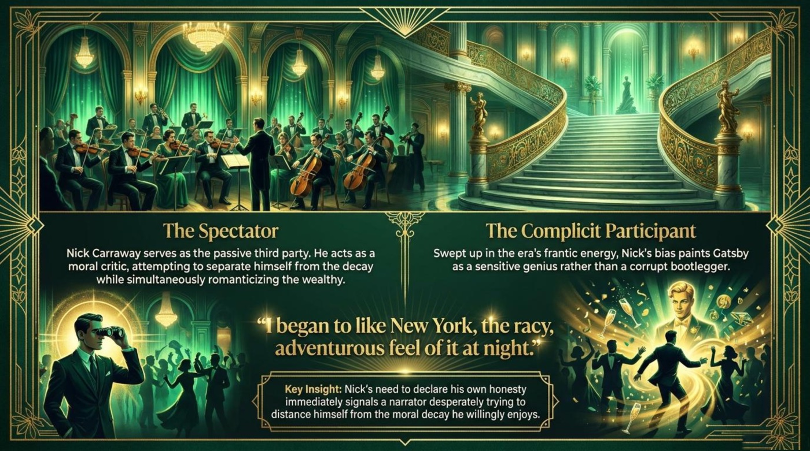
The deck presents Nick's two faces side by side: the moral critic and the willing guest.
📌 The Man Who Invented Himself
The third panel performs the most dramatic trick of the deck: it strikes through the name James Gatz and replaces it with Jay Gatsby. The presentation explains the transformation through two ideas. The first is "The Trimalchio Persona — An arrogant former slave who achieves wealth through devious means to throw lavish parties, representing the criminal dust thrown in society's eyes." The name points to Trimalchio, the boastful, self-made dinner host of Roman satire, and it is worth knowing that Fitzgerald's working title for the novel was indeed Trimalchio in West Egg. The second idea is "The Platonic Conception — The complete transformation of a poor North Dakota boy into a mythical figure — a persona invented by a seventeen-year-old."
"He was a son of God... and to this conception he was faithful to the end."
Quoted in the presentation
The deck's key insight lands like a verdict: "Gatsby's entire empire rests on a fairy's wing — an immense fortune built upon the volatile foundation of an impossible fantasy." A vivid example from the story is Gatsby's invented gentlemanly catchphrase "old sport", which he scatters through every conversation like proof of Oxford manners. The phrase is a costume, and the costume is the man.
💡 Practical adviceLanguage learners can borrow Gatsby's method in a healthier form. Adopting a confident second-language self — a slightly more fearless persona who speaks English at parties — is a well-known and effective practice technique. Remember that the vocabulary here is rich in identity words: persona, conception, transformation, facade. Each one lets you describe people who are performing a version of themselves, in novels and in life.
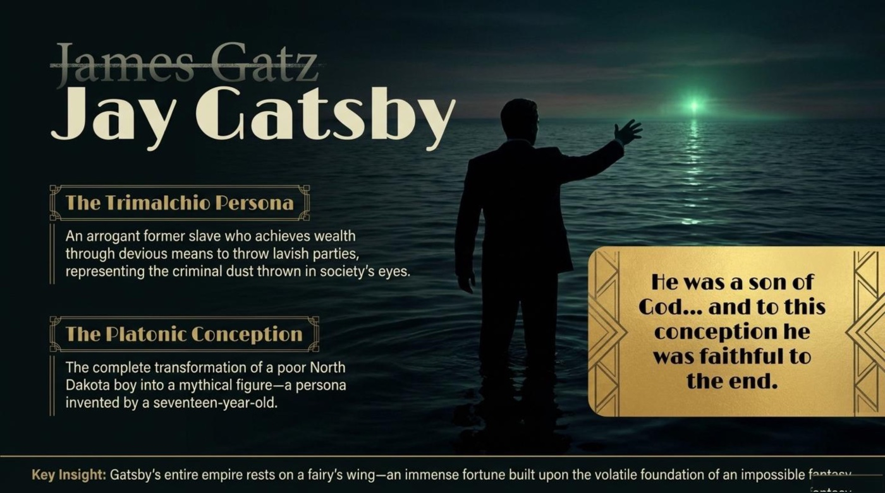
James Gatz is struck through; Jay Gatsby reaches for the green light of his invented destiny.
📌 The Jazz Age Engine
The fourth panel zooms out from one man to an entire civilization on the move, and it names the three forces that powered the era. First, "Prohibition & Bootlegging — The 18th Amendment creates a thriving underworld, funneling criminal money into the hands of the newly rich." Second, "The Lost Generation — Post-WWI disillusionment leaves a cohort wandering and directionless, abandoning Victorian morality for unrestrained pleasure." Third, "Unrestrained Materialism — The American Dream shifts drastically from the pursuit of happiness and equality to raw, feverish consumerism."
"A new world, material without being real."
Quoted in the presentation
That compressed phrase deserves a slow read. The age produced plenty of material — cars, shirts, mansions, champagne towers — yet the deck insists it was without being real, because none of it stood for anything solid. A concrete illustration sits in the story itself: Gatsby's mansion is a factual imitation of a Norman town hall, grand in appearance and hollow in purpose, built for a single pair of eyes across the bay.
💡 Practical adviceHistorical words are keys that unlock whole texts. Learn the cluster once — bootlegging, Prohibition, speakeasy, the Lost Generation — and an entire era of American books, films, and songs becomes readable at once.
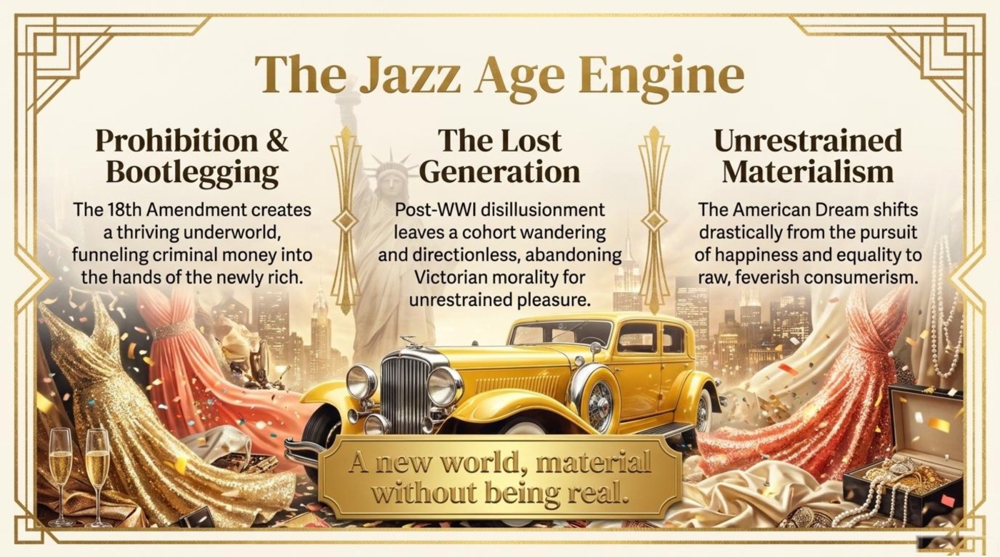
Three engines of the era: criminal money, post-war restlessness, and feverish consumerism.
📌 A Map of Money: Old, New, and None
The presentation then hands the reader a geography lesson disguised as a class diagram, titled "East Egg, West Egg, & The Valley of Ashes: A Rigid Class Matrix." East Egg stands for Old Money and belongs to the Buchanans, described with four cold strokes: "Inherited wealth", "Stationary, aimless lives floating like balloons", "Protected by an impenetrable glass ceiling", and "Ruthless and careless." West Egg stands for New Money and belongs to Gatsby: "Bootlegging and criminal wealth", "Ambitious and active but gaudy", "Forever outsiders trying to buy their way in", and "The facade of the American Dream." The Valley of Ashes stands for No Money and belongs to the Wilsons: "Trapped in a living purgatory", "Physical waste products of the industrial boom", "Victims of a rigged socio-economic system", and "Spirits crumbling into powder."
"Key Synthesis: Privilege and snobbery reign absolute; upward mobility is a deadly illusion."
The presentation's class matrix
The matrix explains why Gatsby's project was doomed from the start. He could buy the mansion, the shirts, and the parties, yet the deck's synthesis states plainly that the ladder he was climbing had no top rung for people like him. The image of the Buchanans floating like balloons is especially useful for English learners, because it shows how a single simile can carry an entire social argument — weightlessness as a privilege of those who never have to land.
💡 Practical adviceLearn vocabulary in triads instead of single words. The presentation's Old Money — New Money — No Money triple gives you three registers of the same topic in one stroke, and triads are far easier to memorize than isolated items. Try building your own triads from your professional field or hobby.
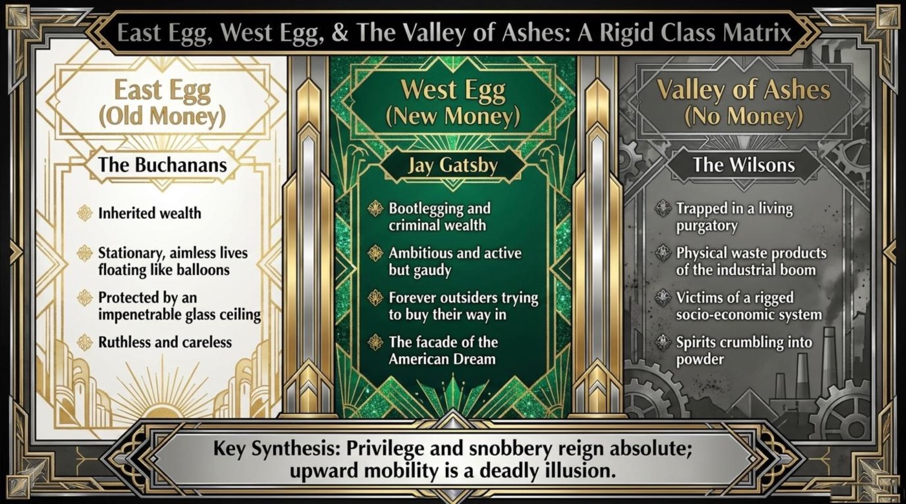
Three districts, three castes: the deck's rigid matrix of wealth and its key synthesis.
📌 The Confrontation: Threat, Weapon, Shattering
The climax of the story arrives in a hotel suite on a suffocating summer afternoon, and the deck choreographs it in three beats. "The Threat — Tom Buchanan, the aristocratic white supremacist, feels his inherent privilege threatened by Mr Nobody from Nowhere.""The Weapon — Tom uses Gatsby's illegal bootlegging origins as a blunt instrument, exposing the criminal dust Gatsby threw in Daisy's eyes.""The Shattering — The moment Daisy's disapproval registers, Gatsby's entire caravansary falls in like a house of cards."
"Jay Gatsby had broken up like glass against Tom's hard malice."
Quoted in the presentation
Pay attention to the insult Mr Nobody from Nowhere, which the deck places at the center of the scene. Tom does not defeat Gatsby with an argument; he defeats him with a class label, a reminder that no fortune can outshout the question of where a man comes from. The three-beat structure — threat, weapon, shattering — is also a ready-made template for telling any dramatic story in English, from a business negotiation that collapsed to a friendship that broke.
💡 Practical adviceNotice that the deck describes Gatsby's world with words of fragile things: glass, caravansary, house of cards. Collecting metaphors of fragility (crumble, shatter, collapse, fall apart) gives you a precise, vivid toolkit for describing failure of any kind.
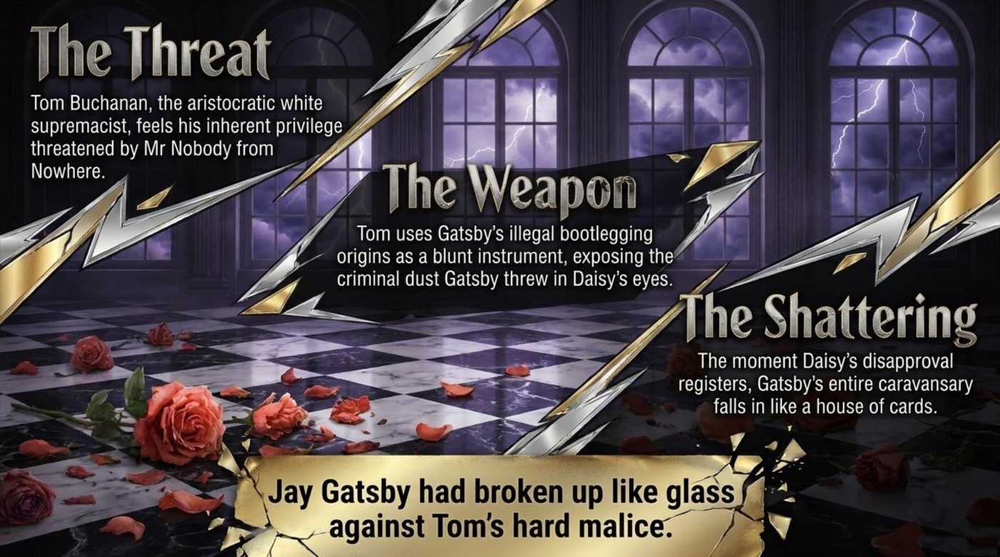
The confrontation in three beats, ending with Gatsby broken like glass against Tom's malice.
📌 The Machinery of Death
After the confrontation, the era's favorite object does its darkest work. The deck states it without decoration: "The automobile, the premier symbol of 1920s prosperity and freedom, is transformed into a murder weapon." Myrtle Wilson runs toward the yellow car believing the wealth inside it belongs to Tom, and the encounter kills her instantly. The quotation the deck attaches to the drive home is one of the coldest lines in the novel:
"So we drove on towards death through the cooling twilight."
Nick Carraway, quoted in the presentation
The panel titled "The Collateral Damage" widens the lens: "Myrtle's desperate attempt to run toward wealth results in her immense vitality being violently extinguished. Gatsby, Myrtle, and Wilson are all revealed to be the fatal collateral damage of a rigged American Dream." The phrase collateral damage is modern, bureaucratic English — the language of reports and news briefings — and the deck deliberately applies it to a tragedy of the 1920s. The lesson is that systems with rigged rules do not merely fail; they produce casualties, and the deck names three of them.
⚠️ Reading skillWatch how one object can carry opposite meanings. The car begins the novel as freedom, prosperity, and glamour, and it ends as the machinery of death. Strong writers in English build meaning exactly this way — by quietly reversing the value of an image — and noticing the trick is a genuine upgrade to your reading comprehension.
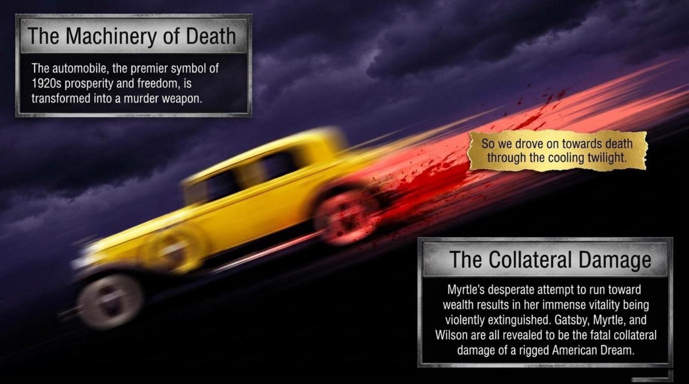
The symbol of prosperity turned weapon, and the three fatal casualties of a rigged dream.
📌 The Price and the Verdict
The deck's final panels slow the story down to the speed of water. Gatsby floats in his pool on the last warm day of the year, refusing to admit that summer — and the dream — can end. The presentation describes the moment with terrible gentleness: "Floating in the pool, Gatsby finally faces the unreality of reality. Without the dream to sustain it, the world is terrifyingly raw and meaningless." The quotation attached to it shows a man seeing the world without the filter of his fantasy for the first time:
"He must have looked up at an unfamiliar sky... and shivered as he found what a grotesque thing a rose is."
Quoted in the presentation
The deck's key insight decodes the rose: "The rose (Daisy/The Dream) is beautiful in appearance but covered in lethal thorns. Gatsby pays the ultimate price for living too long with a single illusion." What follows is an anatomy of abandonment. The mansion empties, and the deck quotes the novel's image of it: "A sudden emptiness seemed to flow now from the windows and the great doors..." The panel called "The Vast Carelessness" delivers the verdict on the survivors: "Tom and Daisy flee, using their immense wealth as a shield against consequence, smashing up lives and retreating into their money. Gatsby's funeral is utterly empty. The hundreds of guests who drank his champagne refuse to get mixed up in his death." And beside it stands "The Final Verdict": "Despite his criminality, Gatsby's pure devotion to his dream made him worth the whole damn bunch put together — an honorable fool destroyed by a hollow, rotting society."
💡 Vocabulary noteThe funeral paragraph is a masterclass in the vocabulary of absence: emptiness, utterly empty, guests who refuse to appear. English often expresses abandonment through such quiet, negative words rather than dramatic ones — a nuance worth imitating in your own writing.
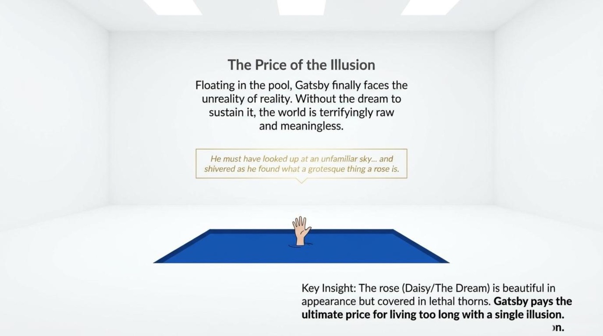
Facing the unreality of reality: the rose is beautiful, and the thorns are lethal.
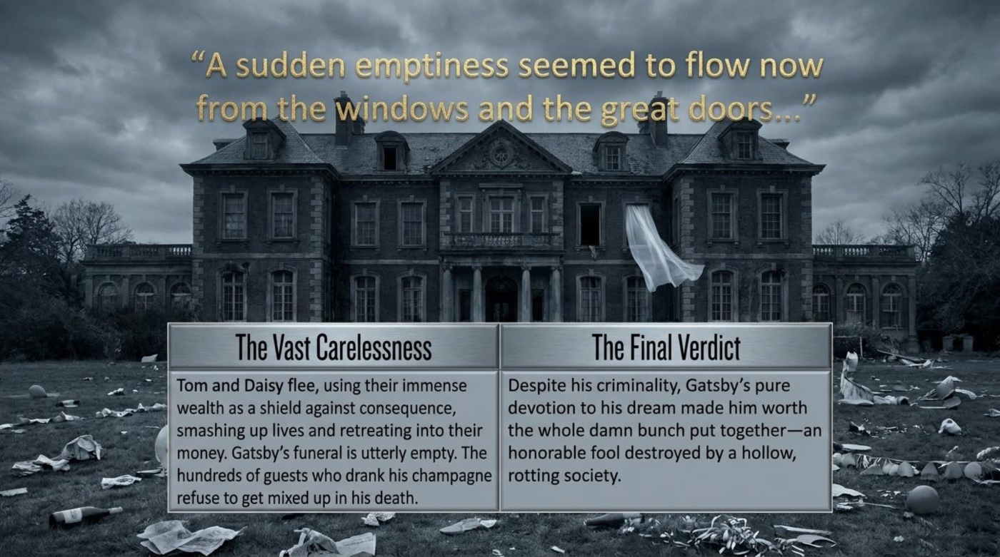
The empty house, the fleeing Buchanans, and the deck's final verdict on an honorable fool.
Part 2 · Vocabulary and Language TakeawaysThe Words That Carry the Dream
The presentation is saturated with expressive English, and its best phrases do double duty: they describe the plot and, at the same time, name universal human experiences. It is worth studying them slowly, because they are exactly the kind of vocabulary that migrates from literature into everyday conversation, journalism, and business English. Each entry below gives the literal sense, the figurative sense, the way the material itself uses the phrase, and a short explanation of the deck's framing.
fever dream noun phrase
Literal: the strange, vivid visions a mind produces during a high fever.
Figurative: a collective delirium — a period of history that feels surreal, intoxicating, and slightly unhealthy.
In the material:"The Great Gatsby: A Fever Dream of the Twenties... A toast to an impossible dream, drifting from dazzle to disillusionment." The deck casts the Roaring Twenties themselves as the fever dream — a whole society hallucinating wealth and pleasure.
How the material frames it: the closing panel completes the image: "The fever dream breaks, leaving only the haunting realization that the era of pure dreaming is over." A dream that breaks behaves like glass, and the verb choice tells you the awakening was violent.
bootlegging noun
Literal: the illegal production, transport, and sale of alcohol, historically linked to flasks hidden inside boot legs.
Figurative: any profitable crime dressed up as respectable business.
In the material:"The 18th Amendment creates a thriving underworld, funneling criminal money into the hands of the newly rich." and "Bootlegging and criminal wealth" — the deck lists it as the first trait of West Egg's new money.
How the material frames it: the confrontation panel turns the word into a weapon: "Tom uses Gatsby's illegal bootlegging origins as a blunt instrument." The same word that built the fortune destroys it, which is the deck's whole argument about the era in miniature.
to throw dust in someone's eyes idiom
Literal: to fling dust into a person's face so that they cannot see.
Figurative: to deceive someone with a dazzling false show; to blind with spectacle.
In the material:"...representing the criminal dust thrown in society's eyes." and again "...exposing the criminal dust Gatsby threw in Daisy's eyes."
How the material frames it: the idiom appears twice, pointed first at society and then at Daisy, and the deck's Trimalchio panel defines Gatsby's entire persona as exactly this dust — a glittering deception thrown at every audience he performs for.
a house of cards idiom
Literal: a fragile tower built from playing cards that collapses at a touch.
Figurative: any ambitious structure — a business, a lie, a reputation — resting on nothing solid.
In the material:"The moment Daisy's disapproval registers, Gatsby's entire caravansary falls in like a house of cards."
How the material frames it: the sentence echoes Fitzgerald's own line about the "whole caravansary" falling in, and the deck builds the entire Shattering panel around that collapse — one glance of disapproval, and years of theater fold flat.
caravansary noun
Literal: a caravanserai — a walled inn in the desert where travelling caravans stop for the night.
Figurative: a grand building that shelters a passing crowd of strangers who never truly belong there.
In the material:"Gatsby's entire caravansary falls in like a house of cards." The deck borrows the word straight from the novel's imagery of Gatsby's house.
How the material frames it: by keeping Fitzgerald's exotic, old-world word, the deck underlines the emptiness of the mansion — an inn for an endless parade of guests, empty the moment the host stops performing.
vast carelessness noun phrase
Literal: an enormous lack of care or concern.
Figurative: the specific irresponsibility of privilege — people rich enough to break things without ever repairing them.
In the material:"Tom and Daisy flee, using their immense wealth as a shield against consequence, smashing up lives and retreating into their money."
How the material frames it: the deck titles its whole aftermath panel "The Vast Carelessness", adopting Nick's famous verdict on the Buchanans as a label for the social class itself.
boats against the current metaphor
Literal: rowing upstream against flowing water.
Figurative: striving toward a future that keeps receding while the past pulls you backward.
In the material:"So we beat on, boats against the current, borne back ceaselessly into the past." — the final sentence of the novel, quoted in full by the deck.
How the material frames it: the closing panel explains the rowing image directly: "a future that recedes before us, driving us endlessly forward while we are anchored to our pasts." The green light and the current are the same idea in two shapes.
✨ Flip the Key Terms
The six most useful terms from the material are gathered below as interactive cards. Click or tap any card to turn it over and find the literal meaning, the contextual meaning, a quotation from the material, and a short note on why the term matters. Keyboard users can reach each card with the Tab key and flip it with Enter or Space.
Part 3 · Deeper MeaningMetaphors and Symbols That Outlive the Story
The presentation devotes some of its strongest panels to the novel's symbols, and each symbol is a compressed lesson in how images carry meaning. Four of them deserve a slow look: the green light, the valley of ashes with its giant watching eyes, the rainbow of shirts, and the clock nobody can stop.
💚 The Green Light at the End of the Dock
The deck saves its synthesis for the final panel and hands the novel's most famous symbol its deepest reading: "The green light remains the ultimate, unreachable American Dream — a future that recedes before us, driving us endlessly forward while we are anchored to our pasts." The significance is that the lamp is never only about Daisy. It is about the structure of desire itself: the moment a goal comes within reach, it stops being the shining thing it was from far away. Gatsby reaches toward the light across the water in the novel's most iconic gesture, and the deck's reading turns that reach into a philosophy of longing that applies to anyone chasing anything.
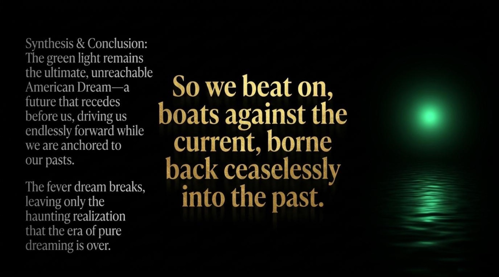
The synthesis panel: the green light as the unreachable dream, and the novel's last sentence in gold.
👁️ The Valley of Ashes and the Eyes of Doctor T. J. Eckleburg
Between the mansions and the city lies a grey dumping ground that the deck reads as sacred ground in reverse. It quotes the novel's own description first: "...ashes take the forms of houses and chimneys and rising smoke and, finally... of men who move dimly and already crumbling through the powdery air." Then it interprets: "The Landscape of Purgatory — An explicit metaphor for the death of the American Dream. This is an allusion to the River Styx — its inhabitants are spiritually dead, trapped in toxic immobility while servicing the wealthy." Over the valley brood the enormous painted eyes of Doctor T. J. Eckleburg, a forgotten advertisement that looks, to one grieving character, like the face of God. The deck's companion panel, "George Wilson's Paralysis", drives the point home: "Contrasted with Gatsby's spectacular rise, Wilson's spirit slowly crumbles. He is barred from wealth by a system that only rewards inheritance or crime." The symbol matters because it shows the price of the party economy — the ashes of one world literally producing the pleasure of another.
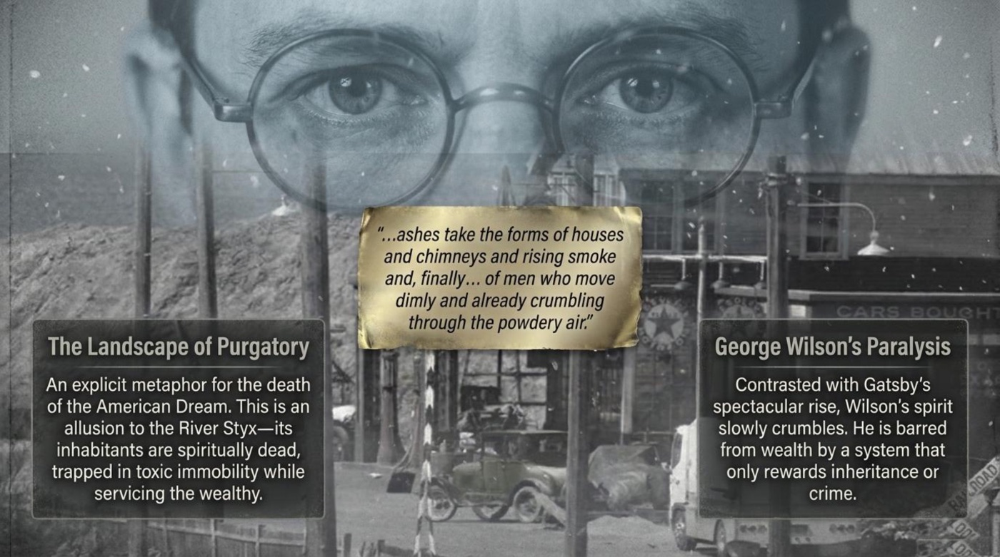
A landscape of purgatory under an advertisement's stare: the American Dream's dumping ground.
👔 The Rainbow of Shirts
One of the strangest and most revealing scenes in the novel gets a full panel in the deck. Gatsby throws a mountain of expensive shirts at Daisy, and she weeps into the pile. The presentation builds the moment in three steps. "Step 1 · The Pedestal — Daisy is stripped of her humanity, reduced to an enchanted object and a receptacle for Gatsby's unrealistic projections.""Step 2 · The Societal Trap — As a 1920s upper-class woman, she embraces passivity, famously hoping her daughter will be a beautiful little fool.""Step 3 · The Material Climax — Crying over the bespoke shirts represents the terrifying moment the immense weight of materialistic idealism completely overwhelms actual human emotion." The quotation the deck attaches seals the interpretation: "At his lips' touch she blossomed for him like a flower and the incarnation was complete." The shirts matter because they settle the deck's central issue — whether love can be paid for in objects — with a devastating image of a woman crying not for the man, but for the fabric.
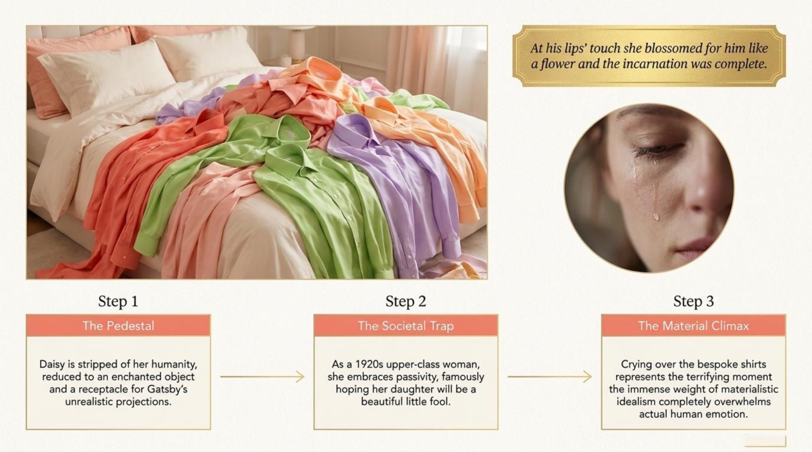
The pedestal, the societal trap, and the material climax — Daisy's story in three steps.
🕰️ The Clock Nobody Can Stop
The deck's most surprising panel treats time itself as the story's true villain. It lists three pieces of evidence. "Refusing to let the gardener drain the pool, attempting to physically halt the changing seasons.""Haunted by lost time and borrowed time, believing he can seamlessly rewrite the past five years.""The novel utilizes over 450 words related to time, casting it as the ultimate antagonist." When Gatsby knocks a broken clock off a mantel in Nick's house and catches it, the deck sees the whole plot in the gesture — a man trying to catch time and put it back together. The quotation beside the evidence makes the stakes explicit:
"No amount of fire or freshness can challenge what a man can store up in his ghostly heart."
Quoted in the presentation
The symbol matters because it reframes the entire plot. Gatsby is not defeated by Tom's malice alone; he is defeated by time, the one opponent that cannot be bought, bribed, or dazzled. It should be noted that the deck's statistic — hundreds of time-words in a single novel — is itself a wonderful language-learning observation: great writers build themes out of vocabulary clusters, and you can watch them do it word by word.
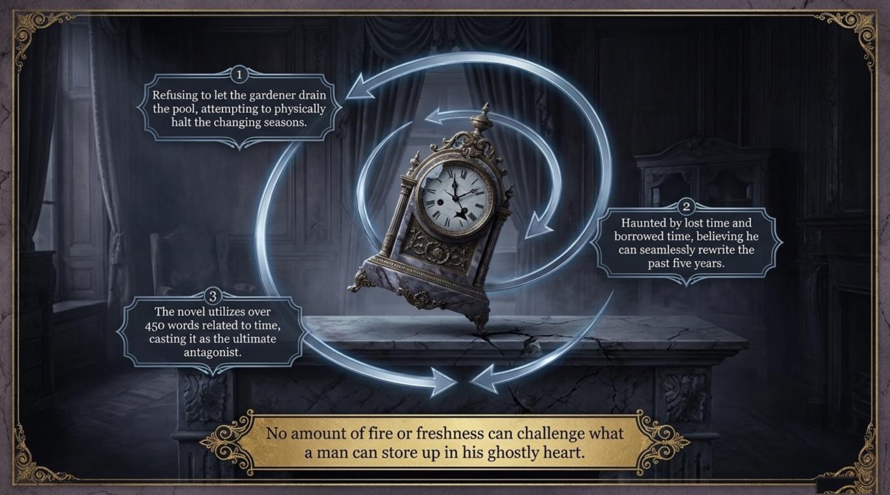
The undrained pool, the borrowed time, the hundreds of time-words: time as the ultimate antagonist.
Part 4 · Comprehension CheckTest What the Fever Dream Taught You
The quiz below gathers the key facts, quotations, and words from the material into eight questions. Each answer gives instant feedback: the correct option lights up green, a wrong choice shakes red, and a short explanation appears under the question. The score counter and the row of dots above the questions track your progress, and the final panel offers a verdict worthy of the deck itself. Take your time — the material always rewards a second look.
SCORE 0/8
8/8
ConclusionBeat On: The Takeaway
The presentation closes with the most celebrated sentence in American literature, set in gold against black water:
"So we beat on, boats against the current, borne back ceaselessly into the past."
The final slide of the presentation, quoting the novel
Its synthesis explains what the rowing means: "a future that recedes before us, driving us endlessly forward while we are anchored to our pasts." And it leaves the reader with the sober lesson of the whole deck: "The fever dream breaks, leaving only the haunting realization that the era of pure dreaming is over." The main takeaway for a language learner is the same as the takeaway for the reader: dazzling surfaces deserve attention, and dust deserves attention too, because the full meaning of any story — and of any language — lives in the gap between them. Fitzgerald built a hundred-year-old masterpiece out of that gap, one glittering and one ash-grey word at a time.
The call to action is simple and worth following. Reread one chapter of the novel tonight with the deck's two word families — light and dust — in hand. Keep a phrase journal for the idioms collected in this article and force yourself to use one of them in conversation this week. Retell the plot to a friend in six sentences using the deck's own architecture: dream, engine, map, confrontation, crash, verdict. Then return to the quiz above until every dot runs green, because repetition is the current that carries vocabulary from the page into permanent memory. The green light will keep receding, and that is precisely what keeps us rowing.
📎 Lesson Files
The original source material that accompanies this article is below. Open it in a new tab to revisit the presentation in full.